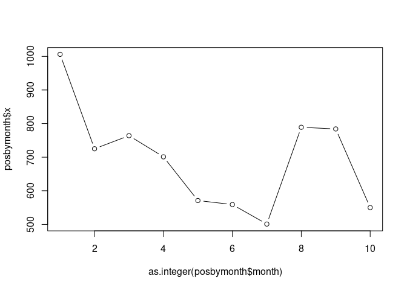

The learning objectives for this practical are:
To do this practical you need an installation of R and RStudio. You can find the instructions in the setup link on how to install R and RStudio in your system. For a smooth development of this practical, it is strongly recommended that you follow and finish the previous seminar 4 on how to get started with R and RStudio.
We will use the data files called
mostres_analitzades.csv and
virus_detectats.csv that were generated in the first practical. If you don’t have these files,
please review that practical and generate them again. Once you have
obtained those two files, copy them into a fresh new directory called
practical7. The values obtained below have been obtained
with the following specific versions (Feb 9, 2026) of these files:
We may often use an interactive R session to quickly examine data or
make some straightforward calculations. In such an interactive session,
we can also recover previous instructions in the R shell by pressing the
upwards arrow key. However, if we really want to keep track
of the R commands we are using, we should write them in a text file with
filename extension .R, which we shall refer hereafter as an
R script.
There are two main ways to create an R script: (1) opening a new file
with a text editor and saving it with filename that includes the
.R extension, or (2) if we are working with RStudio, then
we click on the File menu and select the options
New File -> R Script. When we do that we
should be getting the RStudio window splitted in four panes, the default
three ones and one additional one for the newly created R script, as
shown in the captured window below.
Type in the newly created R script (either with a text editor or with
RStudio) the following two lines to read the CSV file downloaded in the
previous section. The first line is a comment. Lines starting with the
# symbol are comments in R.
> ## read SIVIC data
> dat <- read.csv("mostres_analitzades.csv", stringsAsFactors=TRUE)Now save the R script in the directory practical7 under
the filename sivicanalysis.R.
To execute a specific line of an R script in RStudio you should move
the cursor to that line in the pane with the script file and press the
key combination Ctrl+Enter (Cmd+Enter in Apple
computers). Alternatively, you can also copy and paste the line from the
script to the R shell, specially if you are not working with
RStudio.
The previous line may produce an error if the current working
directory of R is not pointing to the directory where the file
.csv is; see previous seminar 4 if
you need to find out how to change the working directory in R and
RStudio.
In general, changing the working directory should be always performed in the R shell and NEVER include the instruction that changes the working directory in an R script. The reason is because you or somebody else may want to run that script in a different computer where the directory with the data may be called differently.
You can examine the first 6 rows of the loaded CSV file with the
head() function as follows:
> head(dat)
setmana_epidemiologica any data_inici data_final codi_regio
1 12 2023 20/03/2023 26/03/2023 62
2 44 2023 30/10/2023 05/11/2023 62
3 32 2022 08/08/2022 14/08/2022 75
4 27 2023 03/07/2023 09/07/2023 70
5 42 2022 17/10/2022 23/10/2022 64
6 11 2023 13/03/2023 19/03/2023 70
nom_regio codi_ambit nom_ambit sexe
1 Camp de Tarragona 62 Camp de Tarragona Dona
2 Camp de Tarragona 62 Camp de Tarragona Home
3 Barcelona Metropolitana Sud 75 Barcelona Metropolitana Sud Home
4 Penedès 70 Penedès Home
5 Girona 64 Girona Dona
6 Penedès 70 Penedès Home
grup_edat index_socioeconomic total positiu
1 30 a 34 2 1 1
2 30 a 34 3 1 0
3 35 a 39 2 1 1
4 60 a 64 4 1 0
5 70 a 74 3 1 1
6 70 a 74 4 1 1Exercise: tabulate the values of the column
sexe with the function table(). Add to the
script sivicanalysis.R the following two lines to obtain a
new data.frame object called dat2 that
excludes rows where the value in the column sexe is
No disponible. You have to figure out the code that
replaces the questions marks ?????? below.
> mask <- ??????
+ dat2 <- dat[mask, ]Once you subset data, it is always convenient to compare the
dimensions of the original and resulting object, using the function
dim(), and think whether the difference in dimensions makes
sense (e.g., subsetting should always lead to a smaller object in some
dimension), and whether the number of rows in this case matches the
number of TRUE values in the logical mask.
These data have two columns called data_inici and
data_final that corresponding to the begining and end of
the 7-day period of the data of that row, but which are stored as string
character vectors (more specifically as factors). However,
R provides a way to store dates as such and this has the advantage that
facilitates manipulating them for analysis purposes.
For instance, to transform the two columns containing date data we
should use the function as.Date() as follows:
> startdate <- as.Date(dat2$data_inici, "%d/%m/%Y")
> enddate <- as.Date(dat2$data_final, "%d/%m/%Y")Here the second argument informs the function as.Date()
about the format of the input dates, in this case,
day/month/4-digit-year corresponding to the format string
"%d/%m/%Y. The help page of as.Date() contains
full details about this. While R displays these objects as vectors of
character strings in the format 4-digit-year-month-day, they do
belong to a different class of objects, the class Date.
> head(startdate)
[1] "2023-03-20" "2023-10-30" "2022-08-08" "2023-07-03" "2022-10-17"
[6] "2023-03-13"
> class(startdate)
[1] "Date"
> head(enddate)
[1] "2023-03-26" "2023-11-05" "2022-08-14" "2023-07-09" "2022-10-23"
[6] "2023-03-19"
> class(enddate)
[1] "Date"Having dates stored as Date-class objects facilitates operations on dates such as calculating time differences:
Calculating time differences:
> head(enddate - startdate + 1)
Time differences in days
[1] 7 7 7 7 7 7Caculating earliest and latest time with the min()
and max() functions:
> min(startdate)
[1] "2022-05-09"
> max(startdate)
[1] "2026-01-26"Subsetting data for a period of time. For instance, let’s subset the data, selecting rows corresponding to the last academic year from September 2023 to June 2024:
> mask <- startdate >= as.Date("2023-09-01") & enddate <= as.Date("2024-06-30")
> sum(mask)
[1] 8079
> dat2yr2324 <- dat2[mask, ]
> dim(dat2yr2324)
[1] 8079 13Note that the number of TRUE values in the logical mask
matches the resulting number of rows in the subsetted object
dat2yr2324.
Date data also allows one to easily extract the month of each date. Let’s extract again the starting date this time for the subsetted data, and see how do we get the months from those dates:
> startdate <- as.Date(dat2yr2324$data_inici, "%d/%m/%Y")
> m <- months(startdate, abbreviate=TRUE)
> head(m)
[1] "Oct" "Sep" "Oct" "Sep" "Oct" "Oct"
> class(m)
[1] "character"where we have to use the argument abbreviate=TRUE in the
months() function to obtain a vector of equally sized
character strings, which may be useful for visualization purposes.
Important: The previous vector m may
contain the names of the months in a different language than English
when the regional configuration of your operating system, known as locale
configuration, is also different to English. In such a case, it may
be handy to switch at least the regional time configuration to English,
to facilitate following the rest of this practical. To do that, type the
following instruction on the R shell:
> Sys.setlocale("LC_TIME", "C")and then type again:
> m <- months(startdate, abbreviate=TRUE)Verify that now the vector m has the month names in
English.
Factors in R are a class of objects that serve the purpose of storing what is known in statistics as a categorical variable, which is a variable that takes values from a limited number of categories, also known as levels. So factors are pretty much like vectors of character strings, but with additional information about what are the different values that may occur on those vectors.
Not all vectors of character strings are suitable to become factors. For instance, a vector of character strings corresponding to gene identifiers tipically should not become a factor in R, because those identifiers do not represent any kind of category grouping observations.
Factors are useful, however, in the context of a statistical analysis
and data visualization, involving categorical variables. To create a
factor object we should call the function factor() giving a
vector of character strings as argument. Let’s consider converting the
previous vector m of character strings to a factor.
> mf <- factor(m)
> head(mf)
[1] Oct Sep Oct Sep Oct Oct
Levels: Apr Dec Feb Jan Jun Mar May Nov Oct SepWe can see that R displays factors differently to character strings,
by showing the values without double quotes (") and
providing additional information about the possible levels of
that factor. We can access the level information from a factor object
with the functions levels() and nlevels().
> levels(mf)
[1] "Apr" "Dec" "Feb" "Jan" "Jun" "Mar" "May" "Nov" "Oct" "Sep"
> nlevels(mf)
[1] 10Note that we have 10 levels instead of 12, because the subsetted data includes only the months corresponding to the academic year, i.e., from September to June.
Sometimes, we may want the levels of a factor to comprise a set of
specific values or to be ordered in a specific way. This could be the
case of the previous factor mf, where we would like for
instance to have the levels corresponding to the months of the year and
chronologically ordered. We can do that as follows:
> mf <- factor(m, levels=c("Jan", "Feb", "Mar", "Apr", "May", "Jun",
+ "Jul", "Aug", "Sep", "Oct", "Nov", "Dec"))
> head(mf)
[1] Oct Sep Oct Sep Oct Oct
Levels: Jan Feb Mar Apr May Jun Jul Aug Sep Oct Nov Dec
> levels(mf)
[1] "Jan" "Feb" "Mar" "Apr" "May" "Jun" "Jul" "Aug" "Sep" "Oct" "Nov" "Dec"
> nlevels(mf)
[1] 12Important: The previous call to the
factor() function will only work if your
regional time configuration is English. If you are working with a
non-English regional time configuration, you should change the level
names in the argument levels to the language that you are
using.
Now, we can build a contingency table of the level occurrences of a
factor using the function table().
> table(mf)
mf
Jan Feb Mar Apr May Jun Jul Aug Sep Oct Nov Dec
1012 860 872 905 739 672 0 0 648 980 812 579 We can see, there is no data for the months of July and August. We
can remove levels of a factor for which there is no data with the
function droplevels().
> mf <- droplevels(mf)
> levels(mf)
[1] "Jan" "Feb" "Mar" "Apr" "May" "Jun" "Sep" "Oct" "Nov" "Dec"
> table(mf)
mf
Jan Feb Mar Apr May Jun Sep Oct Nov Dec
1012 860 872 905 739 672 648 980 812 579 One of the common uses of a factor is to aggregate numerical values
by the levels of that factor. For instance, in our previous data, the
column positiu contains the number of positively tested
individuals, but each value in that column corresponds to the number per
week, region, sex, age group and socioeconomical index. Let’s say we
want to aggregate those positively tested individuals per month in the
data.frame object dat2yr2324. We can use the
function aggregate() for that purpose, as follows:
> posbymonth <- aggregate(dat2yr2324$positiu, list(month=mf), sum)Here the first argument is the vector (column of
dat2yr2324 in this case) with numerical values that we want
to aggregate, the second argument is a list object with one
element for each factor whose levels we want to use to group the values,
and the third argument is the function we want to use to summarize the
data per group. The result is a data.frame object with one
column per factor and a final column called x with the
aggregate values:
> posbymonth
month x
1 Jan 992
2 Feb 721
3 Mar 752
4 Apr 690
5 May 560
6 Jun 554
7 Sep 495
8 Oct 778
9 Nov 770
10 Dec 543We can visualize these data in a scatter plot by converting the factor into an integer, and plotting the month into the x-axis and the numerical value into the y-axis:
> plot(as.integer(posbymonth$month), posbymonth$x, type="b")
Exercise: look up in the help page of the
plot() function, how can you change the labels for the
x and y axes to a readable label whose meaning
stands alone and minimally describes the data visualized in that axis.
The resulting plot should be identical to the one above, but with the
axes labels changed.
Exercise: Repeat the same plot, but instead of
aggregating the number of positive cases, aggregate the positive rate by
first calculating it using the columns total and
positiu, and then using the mean() function to
aggregate the values. Can you interpret the resulting plot?
Exercise: Aggregate again the positive rate as in
the previous exercise, but this time by two factors, month and age group
(look up in the data.frame object dat2yr2324
which column may store the age group). Assuming the result of the
function aggregate() is stored into a
data.frame object called posrbymonthage, plot
the aggregated positive rate as function of the month using the
following plotting instruction:
> plot(posrbymonthage$x ~ posrbymontage$month, xlab="Month", ylab="Positive rate")The resulting plot contains so-called box plots for each month, which allow one to visualize the location and spread of the data in terms of quartiles. How would you interpret the different sizes of the boxes throughout the months of the year?